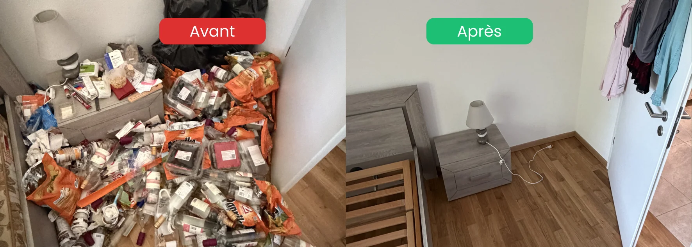

- Peu d'entreprises couvrent réellement ce service en Suisse romande
- La gêne est le premier frein : montrer un logement insalubre à plusieurs prestataires est éprouvant
- Un seul devis, une seule visite : le vrai besoin des familles
- Réactivité clé : réponse rapide et intervention sous 24 à 48h en général
- Discrétion totale : véhicules sans marquage, aucun mot au voisinage
Pourquoi si peu d'entreprises couvrent ce service
Le nettoyage insalubre et extrême est un métier à part. Il demande :
- Une équipe formée à des conditions physiques et psychologiques éprouvantes
- Du matériel de protection (EPI complets, aspirateurs spécifiques, produits professionnels)
- Une capacité à gérer les émotions des familles concernées, sans jugement
- Une coordination possible avec débarras, désinfection, remise en état
- Une disponibilité rapide, y compris le weekend
Beaucoup d'entreprises de nettoyage classique refusent ces interventions parce qu'elles sortent totalement de leur méthode courante. C'est pourquoi les familles peinent souvent à trouver un prestataire réellement disponible sur ce type de mission.
Le vrai besoin : ne pas multiplier les visites
Voici un pattern que nous rencontrons systématiquement dans les demandes qui nous parviennent.
Le client (souvent un enfant adulte, un proche, un notaire, une régie) contacte 2 ou 3 entreprises pour obtenir des devis. Il en attend en général une seule chose : une réponse rapide. Quand une entreprise répond enfin, la question du prix est presque secondaire.
À la visite, une phrase revient très souvent : « De toute façon, il faut le faire. Je ne veux pas devoir montrer l'appartement à d'autres entreprises. »
Cette phrase révèle le vrai frein de ce marché : ce n'est pas le coût, c'est la gêne. Montrer un logement insalubre à un inconnu est déjà difficile. Le faire à plusieurs équipes différentes est presque insupportable.
C'est pour cette raison que la première entreprise qui répond, qui vient, et qui inspire confiance obtient presque toujours le mandat. Pas parce que le client renonce à comparer : parce qu'il refuse, humainement, de recommencer trois fois la même épreuve.
Ce qui distingue une vraie entreprise spécialisée
Toutes les entreprises ne se valent pas sur ce type d'intervention. Voici les 5 critères qui font la vraie différence.
1. La rapidité de réponse
Une entreprise qui met plus de 24h à répondre à une demande de nettoyage insalubre n'est probablement pas la bonne. Ces situations sont émotionnellement urgentes, même si elles ne sont pas médicalement critiques. Le silence prolongé aggrave le stress des proches.
2. La disponibilité, y compris le weekend
Beaucoup de situations sont découvertes le weekend (visite à un parent, appel d'un voisin, hospitalisation). Une entreprise qui répond le samedi ou le dimanche offre un service d'une valeur immense pour la famille concernée.
3. Le devis établi lors de la visite
Idéalement, l'entreprise annonce une fourchette de prix indicative sur place, puis confirme par écrit le soir même. Ce fonctionnement évite au client d'attendre plusieurs jours et de replonger dans son stress.
4. La discrétion totale
- Véhicules sans marquage visible si demandé
- Équipes discrètes dans les couloirs et parties communes
- Confidentialité absolue sur l'identité du client et l'état du logement
- Aucune photo publiée, aucun voisin informé
5. L'intervention en 24 à 48h
Après signature du devis, une équipe spécialisée peut généralement intervenir le lendemain ou sous 48h selon la disponibilité. Un délai plus long peut être un signal négatif (équipe non dédiée, sous-traitance).

Comment se déroule une intervention
Pour les familles qui n'ont jamais sollicité ce type de service, voici les grandes étapes.
Étape 1 : le premier contact
Un appel ou un message suffit. Nous écoutons la situation sans jugement, posons quelques questions essentielles et proposons rapidement une visite ou un échange de photos.
Étape 2 : la visite pour le devis
Discrétion totale. La visite dure généralement 30 à 60 minutes. Nous évaluons le volume, les zones critiques et les risques sanitaires. Une fourchette de prix indicative est donnée sur place.
Étape 3 : le devis écrit
Envoi du devis détaillé, avec prix fixe et prestations détaillées, généralement le soir même ou dans les 24h suivant la visite. Aucun engagement, aucune pression.
Étape 4 : le tri, en accord avec la famille
Toujours en collaboration avec vous. Le tri final reste à la charge du client : c'est vous qui décidez ce qui se garde. Nous ne jetons jamais seuls des objets sensibles (documents, souvenirs, objets de valeur).
Étape 5 : le débarras
Évacuation des encombrants et déchets vers les filières adaptées (recyclage, dons quand c'est possible, déchetterie en dernier recours).
Étape 6 : le nettoyage et la désinfection
Nettoyage en profondeur, désinfection des surfaces sensibles, dégraissage des cuisines et sanitaires. Le logement retrouve un état habitable.
Étape 7 : la remise en état finale
Aération, contrôle qualité, photos avant/après si vous le souhaitez. Le logement est prêt à être rendu, vendu, ou occupé à nouveau.
Une entreprise qui répond, qui vient, et qui intervient vite
Devis en 24h · Intervention en 24 à 48h · Discrétion totale
Voir le service insalubre & extrême →Ce que nous couvrons dans la région
En Suisse romande, notre zone d'intervention pour ce service couvre :
| Canton | Communes principales |
|---|---|
| Vaud | Payerne, Avenches, Moudon, Cudrefin, Yverdon-les-Bains, Lausanne (selon urgence) |
| Fribourg | Estavayer-le-Lac, Domdidier, Fribourg, Bulle, Broye fribourgeoise |
| Neuchâtel | Selon disponibilité et urgence |
| Broye | Toute la Broye vaudoise et fribourgeoise |
Les situations que nous rencontrons
Chaque intervention est unique, mais les contextes se répètent souvent.
- Parent âgé hospitalisé : les enfants découvrent la situation en allant chercher des affaires
- Décès : la famille doit vider et remettre à la régie
- Syndrome de Diogène : découverte progressive de l'ampleur du problème
- Locataire parti : le propriétaire ou la régie découvre l'état du logement
- Retour de longue maladie : dégradation lente et invisible
- Situations sociales complexes : coordination avec CMS, médecin, curateur
Chaque situation demande une approche différente, mais toutes partagent trois besoins : écoute, réactivité, discrétion. Pour aller plus loin sur des cas précis, consultez nos guides Nettoyage après décès, Syndrome de Diogène d'un proche et Nettoyage d'un appartement insalubre après hospitalisation.
FAQ – Entreprise de nettoyage insalubre en Suisse romande
Combien d'entreprises proposent réellement ce service en Suisse romande ?
Très peu, honnêtement. Beaucoup d'entreprises de nettoyage refusent ces interventions car elles demandent un matériel spécifique, une équipe formée et une disponibilité rapide. C'est pourquoi les familles peinent souvent à trouver un vrai spécialiste, surtout en dehors des grandes villes.
Combien de temps entre le premier appel et l'intervention ?
En général 3 à 5 jours. Comptez 24 à 48h pour la visite et le devis, la signature généralement le jour même, puis l'intervention dans les 24 à 48h suivantes selon disponibilité. Pour les cas très urgents (retour d'un proche hospitalisé, délai régie), l'intervention peut être avancée au lendemain.
Faut-il obligatoirement demander plusieurs devis ?
Non. Vous en avez le droit, bien sûr, mais dans les faits la plupart des familles préfèrent traiter avec un seul interlocuteur pour éviter de montrer le logement à plusieurs équipes. Une entreprise sérieuse propose un prix fixe transparent qui rend inutile la mise en concurrence systématique.
Le service est-il vraiment discret ?
Oui, entièrement. Nos véhicules peuvent intervenir sans logo visible, nos équipes sont discrètes dans les couloirs, et aucune information sur votre situation n'est jamais partagée. La discrétion fait intégralement partie du service, ce n'est pas une option en supplément.
Le prix d'un nettoyage insalubre est-il très élevé ?
Il varie selon le volume, l'état et la surface. Pour un studio, comptez généralement quelques centaines de francs. Pour un appartement de 4.5 pièces avec débarras et désinfection complète, plusieurs milliers de francs sont possibles. Nous donnons systématiquement une fourchette indicative dès la visite pour éviter toute surprise.
En résumé
Trouver une entreprise de nettoyage insalubre en Suisse romande est plus difficile qu'on ne le pense : peu d'acteurs couvrent ce service avec sérieux, et encore moins comprennent le vrai besoin des familles concernées. Ce besoin tient en trois mots : écoute, réactivité, discrétion. Une entreprise qui répond vite, qui vient rapidement, qui devise sur place et qui intervient sous 48h répond à 90% de la demande réelle. C'est ce que nous proposons dans toute la Broye, en Vaud et à Fribourg, avec l'humanité et le respect qu'exigent ces situations.
Ressources d'aide en Suisse
- 143 — La Main Tendue : écoute anonyme 24h/24, pour vous aussi
- Pro Senectute : soutien aux personnes âgées et à leur famille
- CMS (Centre médico-social en Vaud et Fribourg) : évaluation et aide à domicile
- Pro Mente Sana : information et soutien en santé mentale
- Votre médecin traitant : premier interlocuteur de confiance